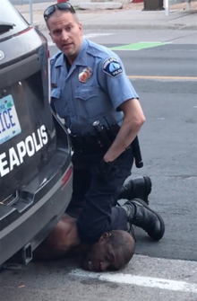

On May 25, 2020, George Floyd, a 46-year-old black man, was murdered in the U.S. city of Minneapolis by Derek Chauvin, a 44-year-old white police officer.[12] Floyd had been arrested on suspicion of using a counterfeit $20 bill.[13] Chauvin knelt on Floyd's neck for over nine minutes while Floyd was handcuffed and lying face-down in a street.[14][15][16] Two other police officers, J. Alexander Kueng and Thomas Lane, assisted Chauvin in restraining Floyd. Lane had also pointed a gun at Floyd's head prior to Floyd being put in handcuffs.[17] A fourth police officer, Tou Thao, prevented bystanders from intervening.[
Prior to being placed on the ground, Floyd had exhibited signs of anxiety, complaining about having claustrophobia, and being unable to breathe.[19] After being restrained, he became more distressed, still complaining of breathing difficulties, of the knee on his neck, and of fear of imminent death.[14] After several minutes, Floyd stopped speaking.[14] For the last few minutes, he lay motionless and Officer Kueng found no pulse when urged to check.[20][21] Despite this, Chauvin ignored pleas from bystanders to lift his knee from Floyd's neck
The following day, after videos made by witnesses and security cameras became public, all four officers were fired.[23] Two autopsies, and one autopsy review, found Floyd's death to be a homicide.[24][25] On March 12, 2021, Minneapolis agreed to pay $27 million to settle a wrongful death lawsuit brought by Floyd's family. On April 20, Chauvin was convicted of unintentional second-degree murder, third-degree murder, and second-degree manslaughter,[4][26] and sentenced to 22.5 years in prison on June 25.[27] All four officers faced federal civil rights charges.[28] In December 2021, Chauvin pled guilty to federal charges of violating Floyd's civil rights by using unreasonable force and ignoring his serious medical distress.[29][30] The other three officers were also later convicted of violating Floyd's civil rights.[31] Lane pleaded guilty in May 2022 to a state charge for aiding and abetting second-degree manslaughter[32] and on September 21, 2022 was sentenced to 3 years in prison to be served concurrently with his 2 1/2 year federal sentence.[33] Kueng and Thao are scheduled to be tried on state charges of aiding and abetting second-degree murder and second-degree manslaughter on October 24, 2022.[34][35] Floyd's murder led to worldwide protests against police brutality, police racism, and lack of police accountability.
